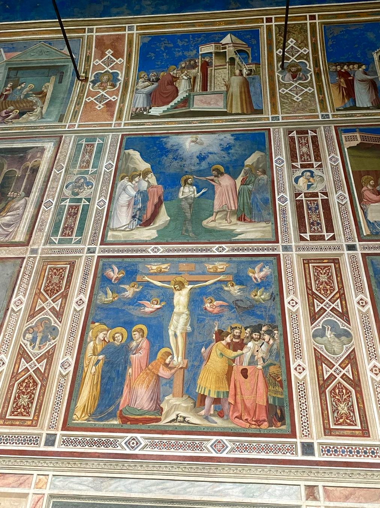
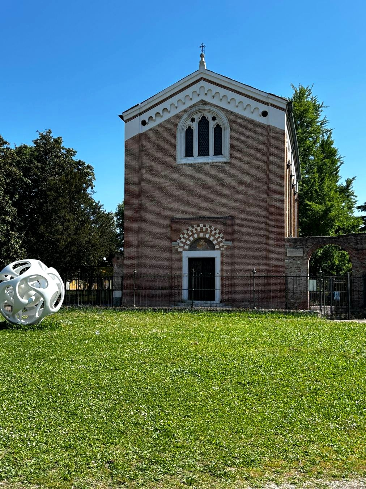
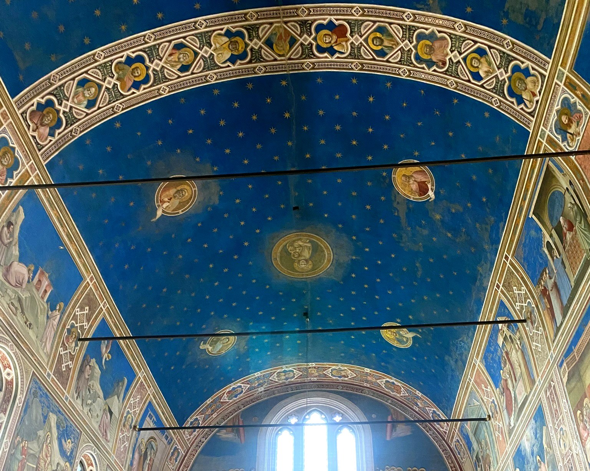
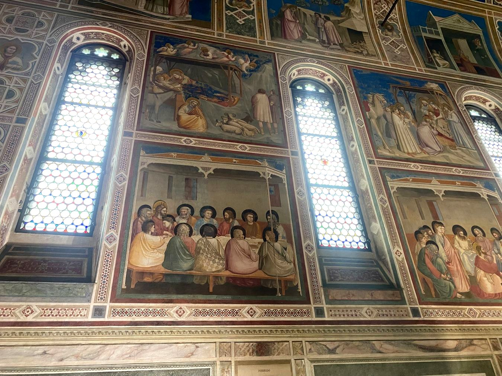
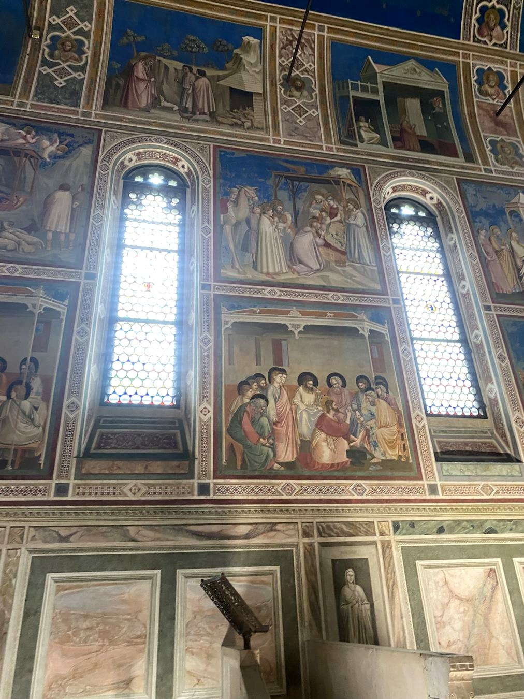
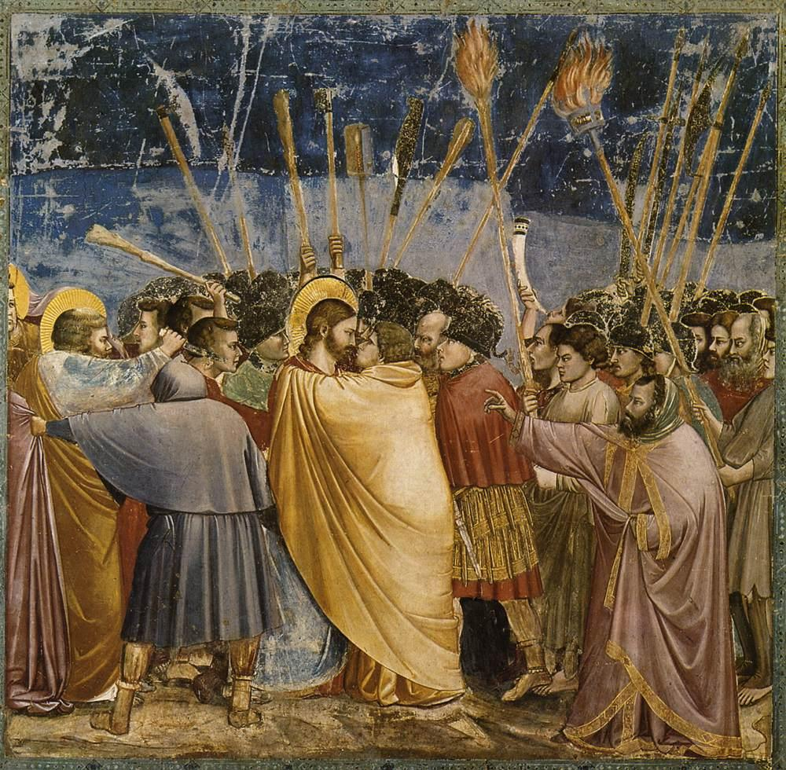
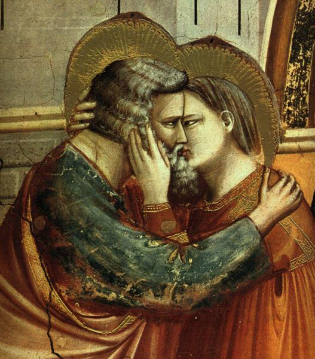

Raconter par les gestes
Les personnages se regardent, se rapprochent, tendent les bras ou s'inclinent. Le récit devient lisible dans les attitudes.
Observer le Baptême du Christ et la Crucifixion.
Vers 1267 – 1337 · Peintre et architecte florentin · Fin du Moyen Âge
Avec Giotto, les figures ne se contentent plus de représenter une histoire sacrée : elles semblent éprouver des émotions, occuper un espace et agir les unes avec les autres.
Il ne peint pas encore selon les règles de la perspective mathématique du XVe siècle. Mais il donne aux corps du poids, aux gestes du sens et aux scènes une remarquable intensité.
Giotto · Chapelle des Scrovegni · Padoue
Giotto di Bondone naît probablement vers 1267, près de Florence, et meurt à Florence en 1337. Peintre renommé de son vivant, il travaille dans plusieurs villes italiennes, notamment Florence, Padoue et Naples.
Selon une tradition rapportée plus tard par Giorgio Vasari, Giotto aurait été découvert et formé par Cimabue. Cette histoire est célèbre, mais les détails de sa formation ne sont pas établis avec certitude.
Au début du XIVe siècle, il contribue à transformer la peinture : ses personnages acquièrent une présence physique, les gestes expriment les sentiments et les épisodes religieux prennent la forme de scènes vécues.
Vers 1267 — Naissance probable en Toscane.
Vers 1303–1305 — Réalisation du grand cycle peint de la chapelle des Scrovegni, à Padoue (datation discutée selon les sources).
1334 — Nommé maître d’œuvre de la cathédrale de Florence ; le campanile porte son nom.
1337 — Mort à Florence.
Giotto appartient à la fin du Moyen Âge, souvent qualifiée de « pré-Renaissance » : il prépare des transformations que les peintres du XVe siècle développeront.
À retenir : Giotto n’invente pas la perspective géométrique, mais il donne une nouvelle force au récit peint et à la représentation de l’être humain.

Chapelle des Scrovegni, Padoue · Photographie personnelle
À Padoue, la chapelle commandée par Enrico Scrovegni abrite un ensemble exceptionnel de fresques peintes par Giotto au début du XIVe siècle, généralement datées autour de 1303–1305.
La sobriété de l'extérieur contraste avec les murs entièrement couverts d'images. Les épisodes des vies de Joachim et Anne, de Marie et du Christ se succèdent comme un récit que l'on peut suivre du regard.
La voûte bleue constellée d'étoiles, les cadres peints et les fresques créent une expérience visuelle continue. Chaque scène a son cadre, mais toutes participent à un même programme.

Vue générale de l'intérieur et de la voûte étoilée · Photographie personnelle
Giotto organise les fresques en registres superposés : on suit les épisodes comme les chapitres d’un grand récit peint. Le parcours se lit d’une paroi à l’autre, et non simplement de haut en bas.
La vie des parents de Marie et les épisodes de la vie de Marie. C’est ici que se trouve La Rencontre à la Porte dorée, avec le baiser de Joachim et Anne.
La naissance, les miracles et la Passion du Christ. On y découvre notamment Le Baiser de Judas.
Des figures en grisaille, peintes comme des sculptures, invitent à réfléchir aux choix humains.
Sur le mur d’entrée : le grand Jugement dernier complète ce programme. Et au-dessus de tout, la voûte bleue étoilée enveloppe le visiteur.
Au-dessus des scènes, la voûte d’un bleu intense est ponctuée d’étoiles dorées. Elle relie les différentes histoires peintes et donne à la chapelle une atmosphère saisissante.

Les retouches sont limitées à la luminosité, au contraste et à la balance colorée ; elles ne remplacent pas les couleurs originales des fresques.

Les personnages se regardent, se rapprochent, tendent les bras ou s'inclinent. Le récit devient lisible dans les attitudes.
Observer le Baptême du Christ et la Crucifixion.

Les drapés enveloppent des volumes et les personnages paraissent assis, debout ou réunis dans un espace partagé.
Observer la Cène, dans le registre inférieur.

Les scènes se suivent en registres. Les décors bâtis, les rochers et les architectures situent les actions.
Observer les cadres et les scènes superposées.
Le Jugement dernier, mur occidental de la chapelle · Photographie personnelle
Au centre supérieur, le Christ juge domine la composition. À sa droite, du côté gauche de l'image, se déploie le monde des élus ; à sa gauche, du côté droit de l'image, celui des damnés et de l'Enfer.
Le contraste des couleurs, l'accumulation des figures et les mouvements guident le regard vers les différents destins.
La scène comprend aussi, dans sa partie inférieure, Enrico Scrovegni présentant un modèle réduit de la chapelle.
Les figures gagnent en présence et en volume, tout en restant liées à la tradition byzantine.
Voir la fiche Cimabue →Les corps semblent habiter l'espace ; les regards et les gestes rendent les récits plus humains.
Au XVe siècle, la perspective géométrique et la lumière donnent une nouvelle cohérence à l'espace peint.
Voir la fiche Masaccio →À nuancer : Giotto ne « découvre » pas seul le réalisme, et il n'utilise pas encore la perspective mathématique mise au point à la Renaissance. Son apport majeur est une nouvelle puissance narrative et une présence physique et émotionnelle des figures.
LE REGARD EN DÉTAIL
Giotto raconte deux rencontres opposées : la tendresse de Joachim et Anne, puis la trahison de Judas. Le geste devient un langage.

Giotto, chapelle des Scrovegni, Padoue, vers 1303–1305. Reproduction : Web Gallery of Art / Wikimedia Commons (domaine public).Au centre, Judas enveloppe Jésus de son grand manteau jaune. Les deux visages se font face, immobiles au milieu de la foule agitée. Les torches, les lances et les gestes convergent vers cette rencontre.
À observer : les regards, le manteau qui unit les silhouettes et le contraste entre calme et agitation.
Cliquez sur l’image pour l’agrandir.

Giotto, chapelle des Scrovegni, Padoue, vers 1303–1305. Reproduction : Web Gallery of Art / Wikimedia Commons (domaine public).Dans La Rencontre à la Porte dorée, Anne entoure le visage de Joachim et leurs joues se touchent. Les mains et les regards expriment une affection palpable : un moment intime traité avec une remarquable humanité.
À observer : les mains sur le visage, les yeux rapprochés et le contact des deux personnages.
Cliquez sur l’image pour l’agrandir.
Deux crucifix peints permettent de regarder une évolution progressive : Cimabue recherche déjà une représentation expressive de la souffrance ; Giotto accentue la présence physique et la pesanteur du corps. Il ne s’agit pas d’une rupture instantanée, mais d’une transformation du langage pictural.


Cette comparaison complète les scènes de la chapelle des Scrovegni : chez Giotto, la présence humaine s’affirme aussi bien dans les grands récits peints que dans une figure isolée.